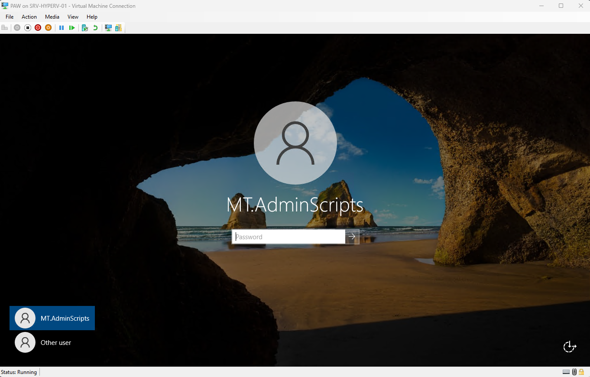
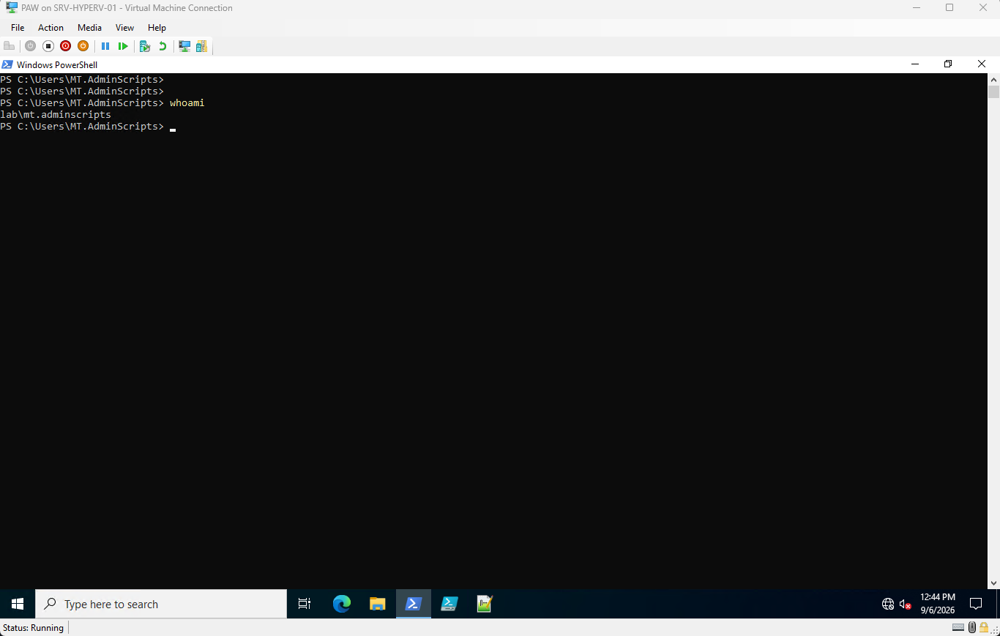
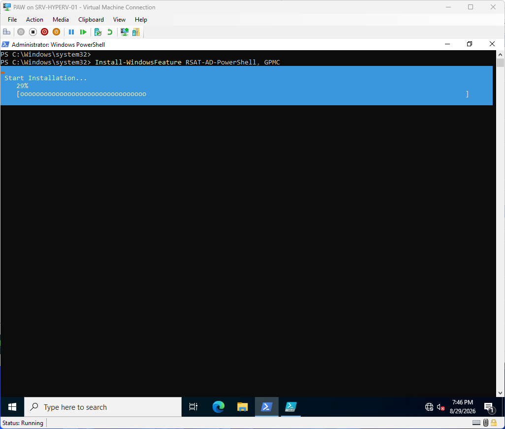
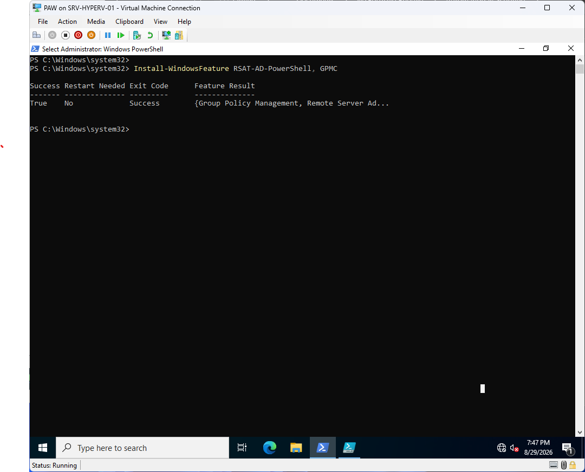
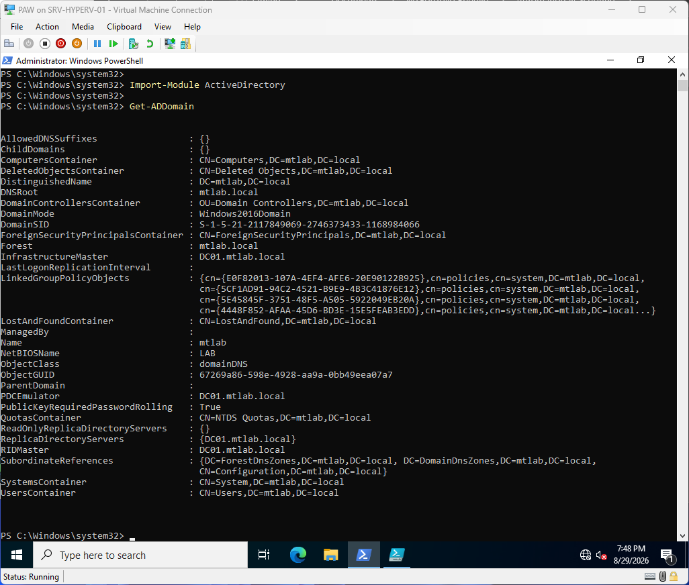
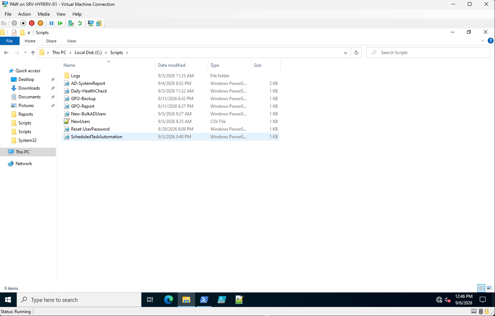
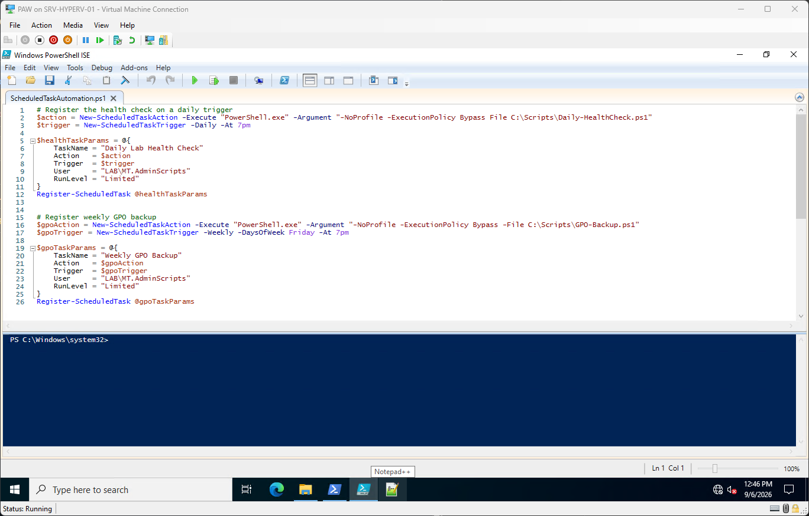

1
PAW — Privileged Access Workstation
A dedicated virtual machine used specifically for running these scripts against the domain controller, kept separate from any day-to-day admin or personal login. All automation in this section is executed from this workstation.

PAW login screen 🔍
2
Dedicated Automation Service Account
A domain account created specifically to run these scripts, added to the built-in Server Operators security group rather than Domain Admins — enough access to manage AD objects and GPOs, without full domain-level privileges.

Confirming identity with whoami 🔍
3
Installing RSAT Tools
Installed the RSAT Active Directory PowerShell module and Group Policy Management Console on the PAW, giving the workstation the tools it needs to manage AD and GPOs remotely against the domain controller.
Install-WindowsFeature RSAT-AD-PowerShell, GPMC

Installation in progress 🔍

Installation complete 🔍
4
Importing & Testing the Active Directory Module
Imported the ActiveDirectory module and ran a quick Get-ADDomain query to confirm the PAW could reach and query the domain controller before writing any of the automation scripts.
Import-Module ActiveDirectory
Get-ADDomain

Get-ADDomain output 🔍
5
Scripts Folder
All automation scripts live together in C:\Scripts on the PAW, alongside their supporting CSV input and a Logs subfolder for health check output.

C:\Scripts contents 🔍
6
Scheduled Task Automation Script
The last script in the folder — ScheduledTaskAutomation.ps1 — registers the health check and GPO backup scripts as native Windows scheduled tasks, shown here open in the PowerShell ISE.

Script — ISE 🔍